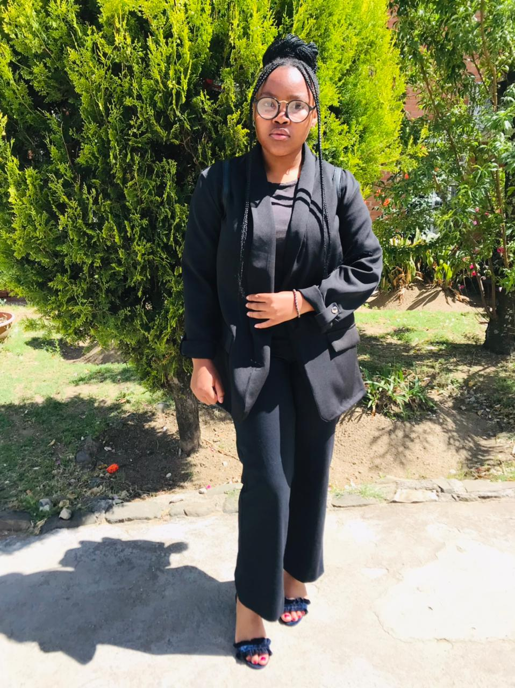

we are the year 2 Limkokwing student, who are currently studing Broeadcasting , As the Broadcasting student, we are likely passionate about media and communication. and storytelling.I have a keen interest in how information is disseminated through various channels, such as television, radio, and digital platforms. Here are some characteristics that may describe me: we possess a natural curiosity about the world around myself, always eager to learn more about current events, trends, and the intricacies of media production. we have a knack for generating innovative ideas, whether it's for a compelling story, engaging visuals, or unique audio content. our creativity helps me stand out in a competitive field. i am becoming proficient in various broadcasting technologies, including cameras, editing software, audio equipment, and broadcasting platforms. My hands-on experience in labs or fieldwork is key to my learning. we understand the importance of effective communication and work on honing our verbal and written skills. we also want to convey messages clearly and engage my audience effectively. Broadcasting often involves working in teams, whether for group projects, live broadcasts, or productions. .
